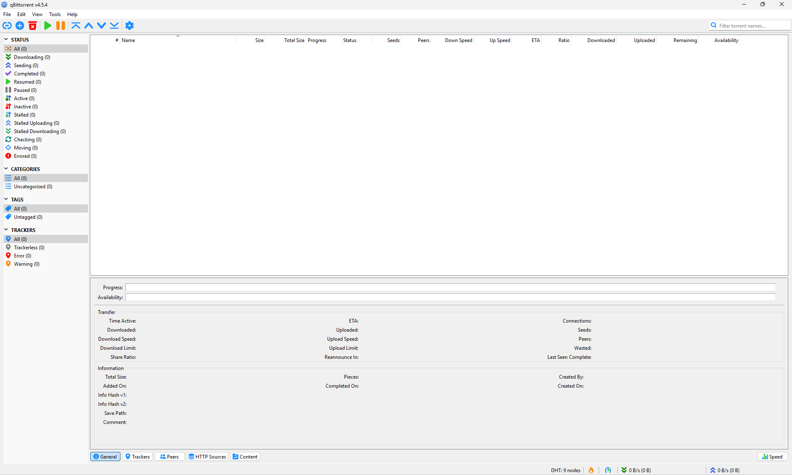

Discover qBittorrent: The open-source BitTorrent client for all platforms
The qBittorrent project aims to give you a free, open-source, and ad-free software alternative to other BitTorrent clients, such as µTorrent.
It's built using the Qt toolkit and libtorrent-rasterbar library.
Download latest: v4.5.4The same feature-set across all major platforms: Windows, Linux, MacOS, FreeBSD, and OS/2.
Support qBittorrent: Your contribution means a lot to us
qBittorrent is a labor of love created by volunteers during their free time. If you appreciate this software, your donation can play a crucial role in sustaining its existence.
You'll find donation information: here.
If you're interested in our translation efforts, please refer to these instructions.Your support is greatly valued.
Feature-Rich qBittorrent: The ultimate torrenting solution
User interface and design
- Polished and familiar interface
- Web interface with remote control, written with AJAX, identical to regular GUI
- No ads
Search and discovery
- Easy search with extensible search engine
- Category specific searching (for example, books, music, and software)
- Simultaneous search in many Torrent search sites
RSS feed and filters
- Advanced RSS feeds with filters (including RegEx)
Torrenting functionality
- Sequential downloading (download in order)
- Advanced control over torrents, trackers, and peers
- Torrent selection, queueing, and prioritising
- Bandwidth scheduler
- Torrent creation
Protocol and connectivity
- Extension support: magnet links, distributed hash table (DHT), peer exchange protocol (PEX), local peer discovery (LPD), private torrents, encrypted connections, and more
- IP Filtering (eMule and PeerGuardian format compatible)
- IPv6 compliant
- UPnP / NAT-PMP port forwarding support
Platform and compatability
- Available on all platforms: Windows, Linux, MacOS, FreeBSD, and OS/2
- Available in 70+ languages